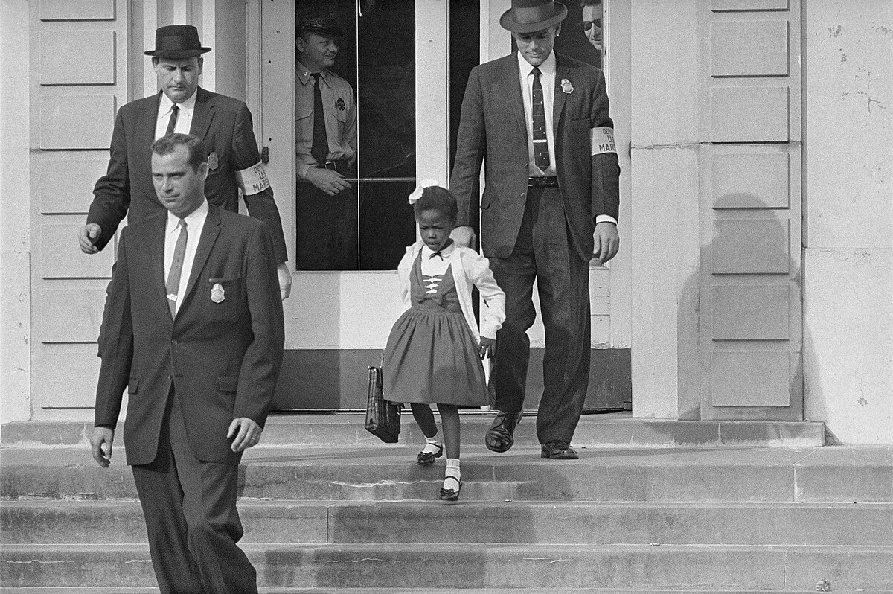
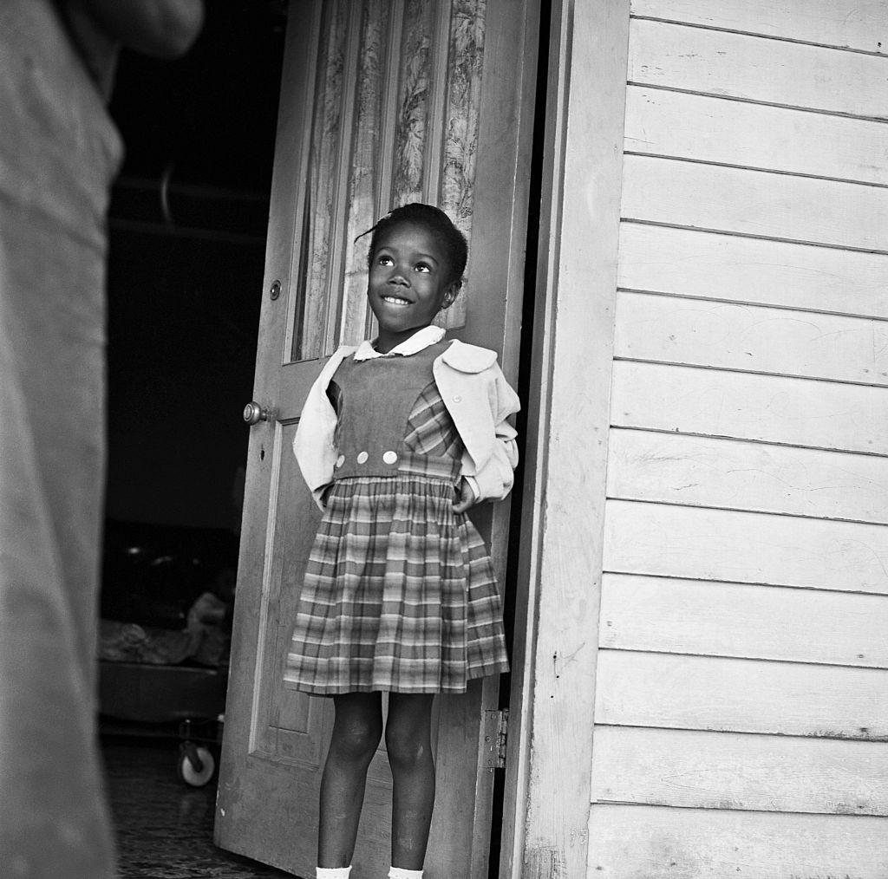

Informations sur l'oeuvre d'art
L’œuvre d’art “The Problem We All Live With” est une huile sur toile de 91 cm sur 150 cm dans laquelle le peintre conserve son style réaliste. Elle est conservée au Norman Rockwell Museum et elle a été réalisée en 1964 par lui-même. Ce tableau illustre
l’histoire de la jeune fille noire Ruby Bridges qui est âgée de 6 ans et qui est la toute première personne noire à intégrer une école réservée aux Blancs à La Nouvelle-Orléans. Durant cette période, il y avait une forte ségrégation
et il était inimaginable que cela se produise. C’est pourquoi elle est accompagnée de quatre agents fédéraux qui l’entourent en marchant devant et derrière elle. Celle-ci se situe alors en plein milieu du tableau et porte également
uniquement des vêtements blancs (jupe, chaussettes, chaussures), permettant ainsi de faire ressortir sa couleur de peau noire. De plus, le mur est tagué de l’insulte “Nigger” juste au-dessus de Ruby et la vise directement.
Cette insulte raciale signifiant “Nègre” est également complétée de l’inscription “KKK” sur la gauche. Ce sigle fait référence au Ku Klux Klan, un groupe terroriste qui lutte contre les personnes noires suite à l’abolition
de l’esclavage en 1865 aux États-Unis. Enfin, on observe qu’une tomate est écrasée au sol et qu’elle a été jetée contre le mur près de Ruby Bridges ainsi que des agents fédéraux, montrant alors les violences et menaces qui
pèsent sur la jeune fille.
Norman Rockwell
Norman Rockwell est un illustrateur et peintre qui devient véritablement engagé dès 1940. Il faisait des illustrations pour le magazine "The Saturday Evening Post" mais il était vite limité dans le contenu qu'il pouvait créer. Cela signifie qu'il était
dans l'obligation de se soumettre aux règles du magazine et qu'il ne pouvait pas représenter n'importe quoi. C'est la raison pour laquelle il a lui-même créé des œuvres d’art afin de leur donner un véritable sens tout en allant
au-delà du simple réalisme, lui permettant ainsi de dénoncer des problèmes sociaux plus profonds. Cependant, il se sert toujours de son observation et de sa curiosité en continuant à s'inspirer de faits réels. Ainsi, dans cette
œuvre d'art, il dénonce avant tout la ségrégation et le racisme envers les personnes noires ainsi que le racisme qui pèsent sur elles.


Contexte de création de l'oeuvre d'art
Cette œuvre a été réalisée dans un contexte particulier, celui du mouvement des droits civiques aux États-Unis dès les années 1960. Depuis la fin officielle de la ségrégation avec l’arrêt de la Cour suprême Brown v. Board of Education en 1954, les États
du Sud refusent encore massivement l’intégration raciale, notamment dans les écoles. L’histoire de Ruby Bridges se déroule en 1960 à La Nouvelle-Orléans, lorsqu’un tribunal ordonne l’intégration de plusieurs enfants noirs dans
des écoles pour personnes blanches. Ruby Bridges est la seule à se proposer malgré les menaces pesant sur elle. C'est pourquoi elle est escortée chaque jour par des agents fédéraux. C’est cet événement marquant que Norman Rockwell
choisit de représenter en 1964, en pleine montée du mouvement des droits civiques, suite à la marche sur Washington (1963) et peu avant l’adoption du Civil Rights Act (1964), une loi interdisant la discrimination raciale. À
travers cette peinture, Rockwell met en lumière le courage de la jeune fille ainsi que celui de toutes les personnes ayant contribué au mouvement les années précédentes.